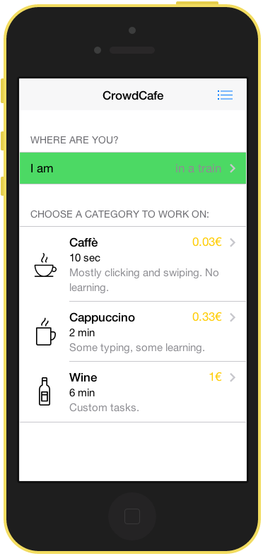
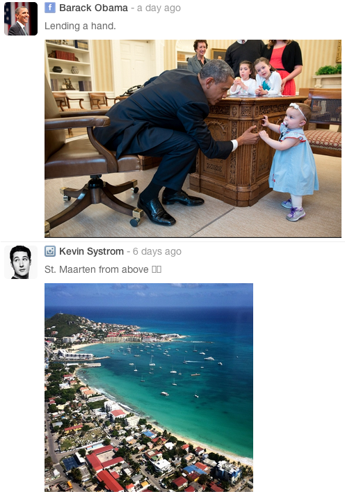

Pavel
Kucherbaev
PhD Student at
- University of Trento - Human Computer Interaction CrowdSourcing
- European Institution of Innovation - Entrepreneurship Quality of life
CV
full CV (5 pages) short CV (2 pages)
Profiles
Projects, I am working on:
CrowdCafe

Tasks Execution
We beleive micro-tasks should be executed via mobile phones to give workers the maximum level of freedom and fun.Tasks creation
All the tasks are created using the cutting edge scientific approaches, including workflows, map reduce, automatic tasks.Time constraints
We beleive that workers should spend minimum time on selecting and understanding tasks. For this we came up with 3 simple task categories.Codesign
Visual collaboration tool
Create projects, upload images, leave comments, define tasks, share with collaborators, control execution. Get your design- and web-projects done with Codesign.
codesign.ioSocial-feed
jQuery plugin to visualize feeds from different social networks
